Understand Before Concluding
Observe
Question
Investigate
Understand
Please consider watching the guided and technical tours before applying for the beta.
Apply for Beta →
Please consider watching the guided and technical tours before applying for the beta.
Apply for Beta →